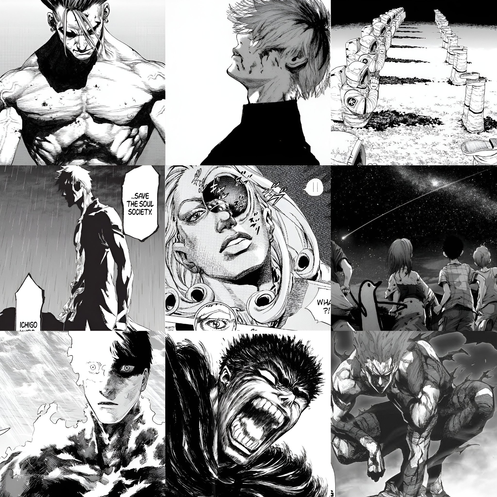

Why Anime is better

Anime, with its captivating visuals and immersive storytelling, offers a dynamic and engaging experience that transcends traditional boundaries. Unlike manga, which relies solely on static illustrations and text, anime brings narratives to life through fluid animation, vibrant colors, and expressive character designs. The medium's audiovisual elements, including voice acting, soundtracks, and sound effects, further enhance the emotional impact of the story, drawing viewers deeper into the fictional worlds portrayed.
Why Manga is better
Compared to anime, manga series usually feature more in-depth character development and storytelling. Manga authors have more time to create story ideas and thoroughly examine subjects because their chapters are published more slowly. For some readers, this can result in a deeper and more engaging reading experience. Additionally, Anime adaptations sometimes deviate from the original manga due to constraints like episode count, production deadlines, or studio decisions. This can lead to filler episodes or changes in the storyline that may not resonate with fans of the manga.
Anime adaptations sometimes deviate from the original manga due to constraints like episode count, production deadlines, or studio decisions. This can lead to filler episodes or changes in the storyline that may not resonate with fans of the manga.